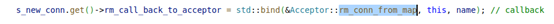
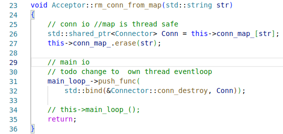

目录
整体
异步高性能日志库
日志内容
前端（得到一条完整的buffer）
1. 在程序任意需要日志的地方执行这个
2. 宏自动改变代码，新建一个类，传递这些参数
3. 构造函数，构造一个log_special类
4. log_special是LogFrontAbstract的唯一的成员
5. log_special的构造函数，log_special构造一个LogStream类的对象

6. 它负责存放全部的buffer
7. 构造结束后调用这个，取出unique智能指针，等于是让logstream来接受<<
8. 在buffer尾部加上这些内容

9. 开始执行析构函数
然后把日志写入后端
后端：写入磁盘
1. 前端最后调用我们的
2. 这个东西最早是默认cout
3. 在main函数里面设置了这个函数
4. 会调用全局的后端日志对象的函数APPEND
5. 构造函数
6. main函数里面一个线程执行后端日志函数
7. 前端调用函数条件变量唤醒
8. 线程函数
9. 被唤醒了之后只是swap操作一下，然后就把锁还回去，这样临界区就很小
10. 如果日志大小大于1024000就换一个文件滚动记录，然后直接写入
线程池
1. list带着weak_ptr用来分配线程
2. 刚开始的时候分配指定数量的线程，给每个线程创建一个Eventloop
然后让每个线程执行这个操作：带着shared_ptr，epoll等待分配任务
3. 需要从线程池分配时候就这样：
Eventloop类
任务
one loop per thread
整体阅览
1. 在main函数里先创建了一个eventloop，作为主要的io线程
2. 整体

循环
主要是通过epoll的成员对象得到活跃的事件，然后执行事件的回调函数
do_wake_up_func是指其它地方传递过来的函数

构造函数和构造流程
1. 构造函数
2. 12行新建一个事件fd
3. 构造Epoller对象
4. 构造timer对象
Epoller类
作用
负责epoll_wait得到活跃的channel事件，然后传递给eventloop用
构造函数
epoll_create和epoll_ctl
获得活跃的事件
通过fd从channelmap中找到channel然后填充revents

epoll_wait
有事件就填充
Timer类
有点bug，因为index是递增的
使用
整体阅览
1. 把所有的超时都封装成一个channel共用
2. hash函数得到index对应的timeevent，记录了回调事件
3. 小顶堆，存放weak_ptr意味着如果事件取消了，延时删除，不需要主动马上堆中取出
构造函数
1. 把timerfd封装进一个channel然后设置回调函数最后加入loop中
超时
1. 使用小顶堆，如果堆顶已经过时间了就开始处理
2. 如果定时事件已经取消，那么就不执行，否则执行回调函数
3. 然后把我们的timerfd设置为堆顶的时间
Channel类
封装事件,和回调
整体
构造
默认构造是一片空，eventloop的流程：
1.
2. 设置fd，在epoller的channelmap中加上然后epoll_ctl
另外一个视角：新的连接到来了new channel视角：
后面就是执行上面那个视角的push_channel
Server类
管理accepter，设置io线程的一个channel：新连接，把accepter的函数绑定成回调
Accepter类
管理所有的连接，有一个Connector的map，同时是shared的智能指针，在io线程中新建连接

构造函数就是bind listen
新连接
1. 从线程池取出一个线程
2. accept然后设置非阻塞socket，创建connector，同时绑定回调函数，最后把addchannel的任务交给某个线程
Connector类
负责一个连接
创建连接之后
设置回调，设置计时器，然后把回调函数
此时引用计数为2（timer有一个，accepter有一个）
关闭连接
主动关闭的情况是先执行accepter的回调从map中删一个引用计数

然后通知main函数

最后函数执行结束，从this删除一个引用计数
吊着一条命直到到了io线程
被动关闭不太一样，先从timer删一个引用计数，再从map中，最后吊着一条命
Buffer类
读取数据

使用分散读，如果数据不多没有用到缓冲区就没事，否则就会往缓冲区中push_data
如果不能直接追加屁股，就考虑两种情况：
1是不用扩容就直接把现在的数据移动到前面去
2扩容就先扩容再把数据移动，然后把标识打好
3最后直接尾部追加